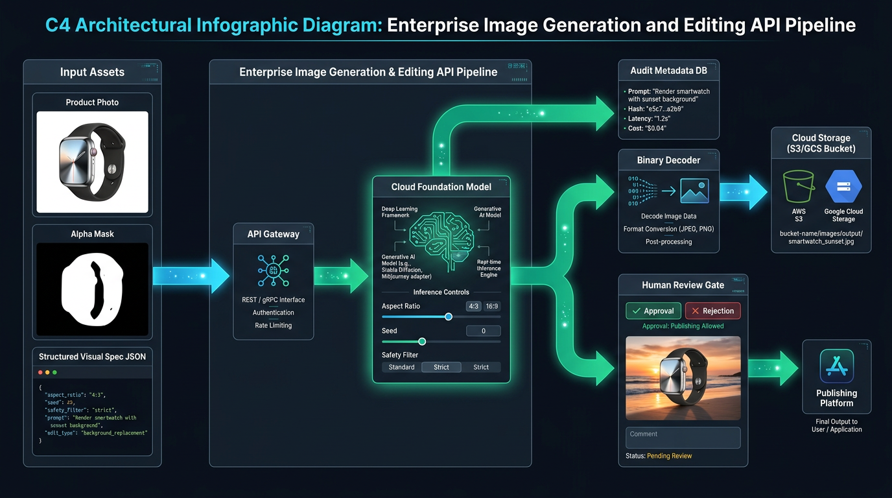
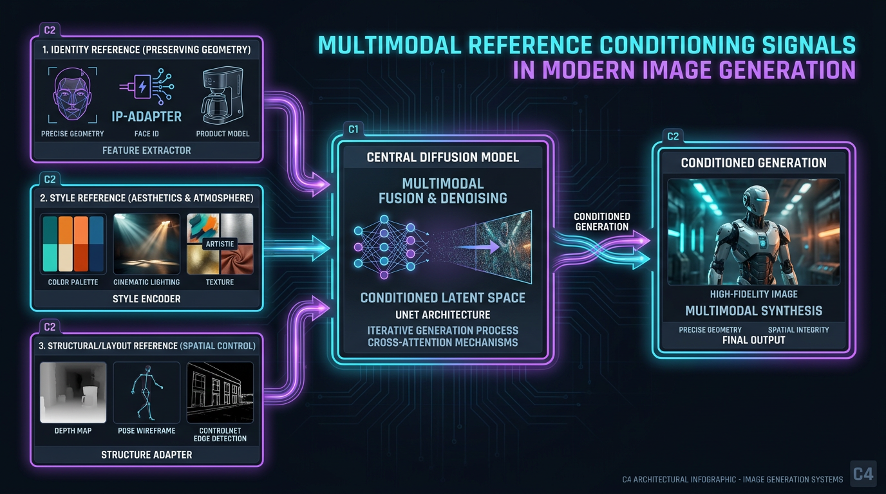
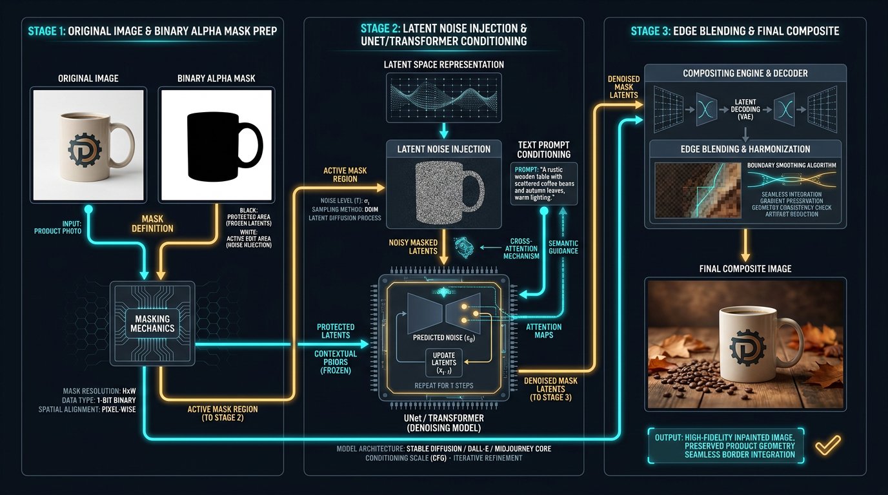
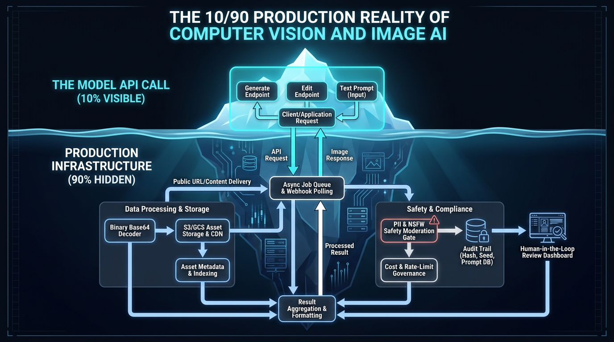

МОДУЛЬ 2 • УРОК 04
МОДУЛЬ 2 • МУЛЬТИМОДАЛЬНОСТЬ • 2026
Генерация и редактирование изображений через API
От случайных пикселей к контролируемым инженерным пайплайнам
АКСИОМА 10/90 В COMPUTER VISION
«Аксиома 10/90: Вызов модели через API — это лишь 10% решения. 90% продакшена — это маски, фиксация геометрии, объектные хранилища S3/GCS, декодирование Base64, аудит метаданных и шлюзы модерации.»
01 • PRIMITIVES
Визуальные примитивы
Text-to-Image, Inpainting, Outpainting, маски и разделение сигналов референсов.
02 • CONTROL
Контрактный контроль
Анатомия промпта как техзадания: неприкосновенные свойства и критерии приемки.
03 • PIPELINE
Продакшен-пайплайн
Аудит метаданных, Base64 декодирование, Blast Radius и Human-in-the-Loop.
EPAM Systems•GenAI Basics
01 / 21
Вводный слайд. Опрос аудитории в чате: 1 - вызывали Image API кодом, 2 - только веб-интерфейсы.
ИНСТРУКТОР
МОДУЛЬ 2 • МУЛЬТИМОДАЛЬНОСТЬ • 2026
Игорь Рубанович
Engineering Manager II & AI Ambassador @ EPAM Systems
Igor Rubanovich
ihar_rubanovich@epam.com
ENTERPRISE DELIVERY
Архитектура и системное лидерство
15+ лет в IT-инженерии, управление распределенными командами и внедрение AI-ассистентов в корпоративный SDLC.
ПРАКТИЧЕСКИЙ AI R&D
Архитектор Creator Tools (Пет-проект)
Создатель и архитектор Creator Tools — набора AI-инструментов для авторов YouTube, помогающих экономить время на производстве контента, оптимизировать процессы и зарабатывать больше.
РЕАЛЬНЫЙ КЕЙС
EPAM CodeMie @ Dawn Foods
Ускорение SDLC на 35% при разработке фич, модульном тестировании и архитектурной документации.
ОБРАТНАЯ СВЯЗЬ
Сдача домашних заданий
Коллаборация в GitHub и ревью кода:
ihar_rubanovich@epam.comEPAM Systems•GenAI Basics
02 / 21
Опыт практического R&D (Creator Tools для YouTube как пет-проект) и корпоративные кейсы (CodeMie @ Dawn Foods).
ДОРОЖНАЯ КАРТА
МОДУЛЬ 2 • МУЛЬТИМОДАЛЬНОСТЬ • 2026
Дорожная карта курса: Где мы находимся
16 занятий в 6 модулях: от текстовых BPE-токенов к мультимодальности и агентам
МОДУЛЬ 1 • L01-L03
Фундамент и Core API
BPE-токены, промптинг, контекстное окно, вызовы API на Python, стриминг и структурированный JSON.
✓ ЗАВЕРШЕН
ВЫ ЗДЕСЬ • МОДУЛЬ 2
Мультимодальность
• L04: Изображения и редактирование (API)
• L05: Видеогенерация (Runway, Kling, Sora)
• L06: Речь и аудио (ElevenLabs, Whisper)
• L05: Видеогенерация (Runway, Kling, Sora)
• L06: Речь и аудио (ElevenLabs, Whisper)
▶ ТЕКУЩИЙ ЭТАП
МОДУЛЬ 3 • L07-L09
Инструменты инженера
GitHub Copilot, экосистема Claude Artifacts, продвинутый анализ данных и генерация кода.
⏳ СЛЕДУЮЩИЙ
МОДУЛЬ 4 • L10
Локальный AI и открытые модели
LM Studio, Ollama, квантование весов, локальный инференс и облачный деплой на RunPod.
⏳ СЛЕДУЮЩИЙ
МОДУЛЬ 5 • L11-L13
Агенты и протокол MCP
Function Calling, создание первых автономных агентов, архитектура Model Context Protocol.
⏳ СЛЕДУЮЩИЙ
МОДУЛЬ 6 • L14-L16
Продакшен и Agentic IDE
Быстрое прототипирование на Streamlit, безопасность и этика, Cursor, Windsurf, Claude Code.
⏳ СЛЕДУЮЩИЙ
EPAM Systems•GenAI Basics
03 / 21
Навигация по курсу. Мы переходим от токенов к мультимодальности.
СТАНДАРТ СДАЧИ
МОДУЛЬ 2 • МУЛЬТИМОДАЛЬНОСТЬ • 2026
GitHub Workflow и структура артефактов
Стандартизированная сдача домашек: ветка lesson-04 и воспроизводимый пакет
ДЕРЕВО РЕПОЗИТОРИЯ • L04
genai-homeworks/
├── L01/
├── L02/
├── L03/
└── L04/
├── brief.md # Visual Generation Canvas
├── references/ # Исходные фото и маски
├── prompt_v1.txt # Начальный промпт
├── prompt_v2.txt # Промпт со спецификацией табу
├── candidates/ # Сгенерированные варианты
├── qa.md # Чек-лист аудита дефектов
└── selected/ # Принятый результат + метаданные
ПРОТОКОЛ СДАЧИ
Ветка lesson-04 и Pull Request
Все изменения вносятся в отдельную ветку. Открывается PR в main, в рецензенты добавляется ihar_rubanovich@epam.com. Никаких прямых пушей в main.
ПОЛИТИКА БЕЗОПАСНОСТИ
Запрет приватных данных и закрытых брендов
Никаких реальных лиц сотрудников без письменного согласия, закрытых чертежей или невыпущенных продуктов. Используем открытые тестовые ассеты.
EPAM Systems•GenAI Basics
04 / 21
Объяснить артефакты домашней работы в GitHub.
РЕАЛЬНОСТЬ ПРОДАКШЕНА
МОДУЛЬ 2 • МУЛЬТИМОДАЛЬНОСТЬ • 2026
Ловушка: «Красиво ≠ Пригодно» (Pretty ≠ Usable)
Почему эстетически безупречная картинка может стать скрытой катастрофой для бизнеса
РАЗВЛЕЧЕНИЕ VS ПРОДАКШЕН
Иллюзия совершенства
В текстовых моделях плохой ответ виден сразу: код не компилируется или факт неверен.
В генерации графики непригодная картинка выглядит кинематографично и дорого. Человеческий мозг очаровывается сочным светом и не замечает, что объект перестал соответствовать реальности.
В генерации графики непригодная картинка выглядит кинематографично и дорого. Человеческий мозг очаровывается сочным светом и не замечает, что объект перестал соответствовать реальности.
5 ТИХИХ КАТАСТРОФ В ПРОДАКШЕНЕ
01Искажение формы изделия: Ручка сместилась на 15%, геометрия керамики поплыла — покупатель получит товар с другой эргономикой.
02Галлюцинация логотипа: Официальный товарный знак превращается в бессмысленный псевдо-шрифт.
03Ложные утверждения: Появление несуществующих характеристик (розетка EU-стандарта на рынке США).
04Юридические риски: Случайное появление элементов защищенных стилей или лиц без согласия.
05Нулевая воспроизводимость: Случайный результат невозможно повторить для следующей партии товаров.
EPAM Systems•GenAI Basics
05 / 21
Ловушка визуальной красоты: почему красивая картинка может быть непригодна для e-commerce.
ФИЗИКА МОДЕЛЕЙ
МОДУЛЬ 2 • МУЛЬТИМОДАЛЬНОСТЬ • 2026
Смена модальности: Физика диффузии и латентного пространства
Почему изображение — это не BPE-токены, и как работает пошаговое удаление шума (Denoising)
Текстовые LLM: Дискретные BPE-токены $w_1 \to w_2 \to w_3$, авторегрессия. | Диффузия & DiT: Непрерывные тензоры, латентный VAE и пошаговый Denoising.
1. VAE LATENT SPACE
Сжатие пространства
Миллионы RGB-пикселей сжимаются вариационным автоэнкодером (VAE) в 8–16 раз в компактное скрытое пространство z. Инференс происходит над тензорами.
2. FORWARD & REVERSE DENOISING
Очистка шума (Denoising)
Картинку учат пошагово удалять белый гауссовский шум за 20–50 шагов. Нейросеть (UNet или DiT) на каждом шаге вычисляет дельту шума.
3. CONDITIONING & SEED
Кросс-внимание и Seed
Текстовый энкодер (CLIP / T5) передает эмбеддинги через Cross-Attention. Seed (зерно шума) определяет стартовую матрицу: фиксация seed дает воспроизводимость.
EPAM Systems•GenAI Basics
06 / 21
Физика диффузии: латентное пространство VAE, пошаговое удаление шума и важность фиксации Seed.
СИСТЕМНАЯ АРХИТЕКТУРА
МОДУЛЬ 2 • МУЛЬТИМОДАЛЬНОСТЬ • 2026
Ментальная модель: Генерация как пайплайн
Модель — лишь один узел; управляемость рождается в архитектурной обвязке до и после вызова

EPAM Systems•GenAI Basics
07 / 21
Сквозной C4-пайплайн: входные ассеты, шлюз API, инференс, хранилище S3, Base64 декодер, метаданные и шлюз модерации.
БАЗОВЫЕ ПРИМИТИВЫ
МОДУЛЬ 2 • МУЛЬТИМОДАЛЬНОСТЬ • 2026
6 визуальных примитивов компьютерного зрения
Фундаментальные операции, комбинация которых закрывает любые прикладные сценарии
01 • TEXT-TO-IMAGE
Генерация с нуля
Создание пикселей исключительно по тексту. Для концепт-арта и раскадровок без жесткой фиксации объекта.
02 • IMAGE-TO-IMAGE
Трансформация референса
Подача входного фото и текста. Модель сохраняет композицию, превращая скетч в финальный фото-рендер.
03 • INPAINTING
Редактирование по маске
Замена пикселей внутри альфа-маски. Замена фона вокруг товара с сохранением 100% геометрии изделия.
04 • OUTPAINTING
Расширение холста
Дорисовывание окружения за пределами границ кадра. Превращение фото 1:1 в широкоформатный баннер 16:9.
05 • REFERENCE SIGNALS
Опорные сигналы
Фиксация идентичности товара (IP-Adapter), колористики (Style Reference) или каркаса позы (ControlNet).
06 • NEGATIVE CONSTRAINTS
Аппаратные запреты
Жесткий фильтр в конфигурации: исключение текста, водяных знаков, анатомических дефектов и лишних чашек.
EPAM Systems•GenAI Basics
08 / 21
6 примитивов. Обязательно выделить Inpainting как главный инструмент для e-commerce.
ИНЖЕНЕРНЫЙ ПРОМПТ
МОДУЛЬ 2 • МУЛЬТИМОДАЛЬНОСТЬ • 2026
Анатомия промпта: Инженерное ТЗ, а не поэма
Разделение промпта на изолированные технические параметры вместо эмоциональных прилагательных
SUBJECT • ОБЪЕКТ
Центральная сущность
Объект в фокусе: один предмет, точный материал, глазурь, цвет. Без размытых абстракций.
COMPOSITION • КАДР
Ракурс и верстка
Угол съемки (eye-level, macro), малая глубина резкости, свободное пространство для верстки.
ENVIRONMENT • СВЕТ
Сцена и атмосфера
Материал поверхности (травертин, дерево), мягкий направленный свет слева, реалистичные тени.
STYLE • ЭСТЕТИКА
Тип съемки
Commercial editorial product photography. Запрет на 3D-рендеры, рисунки и фильтры.
SACRED ATTRIBUTES • ТАБУ
Что нельзя менять
Главная строчка: форма ручки, пропорции изделия и логотип обязаны остаться нетронутыми.
ACCEPTANCE • ПРИЕМКА
Критерии отбора
Чек-лист: совпадение контура товара, отсутствие текста, естественность света, модерация.
EPAM Systems•GenAI Basics
09 / 21
Анатомия промпта. Подчеркнуть, что самое важное указание - что НЕЛЬЗЯ менять.
СРАВНЕНИЕ В ЛОБ
МОДУЛЬ 2 • МУЛЬТИМОДАЛЬНОСТЬ • 2026
Сравнение: Слабый промпт vs Инженерный бриф
Как одна и та же задача решается на уровне случайной лотереи и на уровне предсказуемого контракта
СЛАБЫЙ ПРОМПТ (РУЛЕТКА)
"Сделай красивую рекламу этой кружки в уютной студии."
Типичный результат:
• Модель берет 99% творческой свободы.
• Ручка изменила форму, глазурь поплыла.
• В кадре появились случайные круассаны и лишняя чашка.
• Непригодно для каталога и автоматизации.
• Модель берет 99% творческой свободы.
• Ручка изменила форму, глазурь поплыла.
• В кадре появились случайные круассаны и лишняя чашка.
• Непригодно для каталога и автоматизации.
ИНЖЕНЕРНЫЙ БРИФ (ПАЙПЛАЙН)
"Using input_product.png as protected reference, preserve mug shape, speckled glaze, handle ergonomics, and proportions 100%. Replace only background and surface with pale travertine studio in soft natural morning light. Eye-level, 16:9 crop, 2K. No text, no hands, no extra mugs. Return 3 variants. Acceptance: zero geometry drift against catalog master."
Инженерный результат:
• Изолированные параметры, готовые к параметризации через JSON в коде.
• 100% сохранение физической идентичности товара.
• Четкие критерии для ручного или автоматического QA-отбора.
• Изолированные параметры, готовые к параметризации через JSON в коде.
• 100% сохранение физической идентичности товара.
• Четкие критерии для ручного или автоматического QA-отбора.
EPAM Systems•GenAI Basics
10 / 21
Сравнение слабого и контролируемого промпта. Показать переход от поэзии к спецификации.
МУЛЬТИМОДАЛЬНЫЙ КОНТРОЛЬ
МОДУЛЬ 2 • МУЛЬТИМОДАЛЬНОСТЬ • 2026
Сигналы референсов и мультимодальный контроль
Разделение векторов: идентичность продукта (IP-Adapter), эстетика (Style) и геометрия (ControlNet)

EPAM Systems•GenAI Basics
11 / 21
Разделение референсов: Identity (IP-Adapter) сохраняет лицо/продукт, Style передает настроение, Layout (ControlNet) фиксирует позу.
МЕХАНИКА ИНПЕЙНТИНГА
МОДУЛЬ 2 • МУЛЬТИМОДАЛЬНОСТЬ • 2026
Механика Inpainting и маскирования
Как бинарная альфа-маска и размытие краев (Edge Feathering) защищают пиксели изделия

EPAM Systems•GenAI Basics
12 / 21
Механика маски: черная зона (замороженные пиксели), белая зона (зашумление и денойзинг), сглаживание шва (feathering).
СЕТЕВЫЕ ПРОТОКОЛЫ
МОДУЛЬ 2 • МУЛЬТИМОДАЛЬНОСТЬ • 2026
Жизненный цикл API и сетевые пакеты
Передача бинарных данных по проводу: синхронный Base64 vs асинхронные очереди (Job Queue)
ПАТТЕРН 1 • СИНХРОННЫЙ BASE64
Прямой возврат байтов (2–5 сек)
Где используется: Google Gemini API, OpenAI Images API.
• Клиент отправляет JSON с Base64-строкой изображения.
• Сокет удерживается 3–6 секунд.
• Сервер возвращает Base64-байты прямо в теле ответа.
• Плюс: Мгновенная интеграция в интерактивные боты.
• Минус: Риск таймаута на тяжелых 4K-пакетах.
• Клиент отправляет JSON с Base64-строкой изображения.
• Сокет удерживается 3–6 секунд.
• Сервер возвращает Base64-байты прямо в теле ответа.
• Плюс: Мгновенная интеграция в интерактивные боты.
• Минус: Риск таймаута на тяжелых 4K-пакетах.
ПАТТЕРН 2 • АСИНХРОННАЯ ОЧЕРЕДЬ
Опрос статуса и вебхуки (30–60 сек)
Где используется: Adobe Firefly Services, Midjourney, Local ComfyUI.
• Запрос немедленно возвращает
• Клиент опрашивает статус (Polling) или ждет Webhook.
• Готовый файл скачивается по временной подписанной ссылке из S3.
• Плюс: Надежность и масштабируемость очереди.
• Запрос немедленно возвращает
HTTP 202 Accepted с job_id: 'img_98765'.• Клиент опрашивает статус (Polling) или ждет Webhook.
• Готовый файл скачивается по временной подписанной ссылке из S3.
• Плюс: Надежность и масштабируемость очереди.
EPAM Systems•GenAI Basics
13 / 21
Сетевые паттерны: синхронный Base64 для диалогов vs асинхронный Job Queue для студийного продакшена.
ЛАНДШАФТ ПРОВАЙДЕРОВ
МОДУЛЬ 2 • МУЛЬТИМОДАЛЬНОСТЬ • 2026
Ландшафт провайдеров без маркетингового хайпа
Сравнение ключевых платформ 2026 года по архитектурным возможностям и корпоративной защите
OPENAI IMAGES & RESPONSES
GPT-Image-2 / DALL-E
Глубокое понимание сложных смысловых инструкций, генерация и редактирование. Интеграция генерации как инструмента (Tool Calling) внутри агентов.
GOOGLE CLOUD / GEMINI
Gemini 3.1 Flash Image & Imagen 3/4
Нативный мультимодальный контекст диалога: возможность редактировать картинку через естественные уточнения в общем чате. Быстрый Base64 возврат.
ADOBE FIREFLY SERVICES
Firefly Image5 & Photoshop API v2
Золотой стандарт энтерпрайза: обучение строго на лицензионном стоке, юридическая страховка от исков (indemnity), послойное редактирование PSD.
OPEN SOURCE & LOCAL HOSTING
FLUX.1 / SDXL on RunPod
Полный контроль весов, локальный запуск в закрытом контуре компании, безлимитная генерация и поддержка расширений ControlNet и LoRA.
EPAM Systems•GenAI Basics
14 / 21
Сравнение 4 семейств платформ. Выбирать инструмент под задачу: коммерческая чистота Firefly vs скорость Gemini.
ЭКВАТОР • 5 МИНУТ
МОДУЛЬ 2 • МУЛЬТИМОДАЛЬНОСТЬ • 2026
Экватор: Перерыв 5 минут
Время перезагрузить внимание перед продакшен-айсбергом, Blast Radius и живым кодом
ИНТЕРАКТИВНЫЙ ТАЙМЕР ПЕРЕРЫВА
05:00
Отдохните 5 минут и переведите дыхание. Никаких рабочих тем в чате — полный отдых мозга. Во второй части: продакшен-айсберг 10/90, Blast Radius, запуск кода и домашка.
EPAM Systems•GenAI Basics
15 / 21
Нажать кнопку старта таймера. Полный отдых мозга, без рабочих тем в чате.
ЭНТЕРПРАЙЗ-АЙСБЕРГ
МОДУЛЬ 2 • МУЛЬТИМОДАЛЬНОСТЬ • 2026
Айсберг 10/90 в Computer Vision
10% видимый вызов API модели vs 90% невидимой инженерной инфраструктуры

EPAM Systems•GenAI Basics
16 / 21
Айсберг 10/90: подводная инфраструктура (хранение S3, Base64, PII модерация, очереди, аудит, ревью).
УПРАВЛЕНИЕ РИСКАМИ
МОДУЛЬ 2 • МУЛЬТИМОДАЛЬНОСТЬ • 2026
Зоны риска Blast Radius в генерации изображений
Светофор допустимой автономии: где ИИ безопасен, а где действует абсолютное табу
🟢 ЗЕЛЕНАЯ ЗОНА • АВТОНОМИЯ
Нулевой риск ошибки
Сценарии:
• Внутренние мудборды для дизайнеров.
• Синтетические аватарки и мок-данные для QA-тестирования.
• Эскизы для мозгового штурма.
Модель может работать полностью автономно. Ошибка не стоит ничего.
• Внутренние мудборды для дизайнеров.
• Синтетические аватарки и мок-данные для QA-тестирования.
• Эскизы для мозгового штурма.
Модель может работать полностью автономно. Ошибка не стоит ничего.
🟡 ЖЕЛТАЯ ЗОНА • HUMAN-IN-THE-LOOP
Умеренный риск
Сценарии:
• Карточки товаров для e-commerce маркетплейса.
• Иллюстрации в корпоративный блог.
• Превью-обложки для роликов на YouTube.
Модель генерирует 3–4 кандидата, но публикацию утверждает человек.
• Карточки товаров для e-commerce маркетплейса.
• Иллюстрации в корпоративный блог.
• Превью-обложки для роликов на YouTube.
Модель генерирует 3–4 кандидата, но публикацию утверждает человек.
🔴 КРАСНАЯ ЗОНА • ТАБУ
Катастрофический риск
Сценарии:
• Юридические и судебные доказательства.
• Медицинская диагностика и снимки.
• Печать упаковки с составом лекарств и ГОСТ.
• Изменение официальных товарных знаков.
Прямой запрет на использование генеративного ИИ.
• Юридические и судебные доказательства.
• Медицинская диагностика и снимки.
• Печать упаковки с составом лекарств и ГОСТ.
• Изменение официальных товарных знаков.
Прямой запрет на использование генеративного ИИ.
EPAM Systems•GenAI Basics
17 / 21
Светофор Blast Radius. Четкие границы: где ИИ автономен, где нужен человек, а где табу.
ЖИВОЙ КОД
МОДУЛЬ 2 • МУЛЬТИМОДАЛЬНОСТЬ • 2026
Лайв-демо: Путь от хаоса к контролю
Запуск скриптов demo_repo: генерация героя, сравнение эдитов и сборка промпта из JSON
РАУНД 1 • 01_GENERATE.PY
Первый вызов и Base64
• Запрос к
• Параметры:
• Декодирование байтов
• Запись файла на диск в
gemini-3.1-flash-image.• Параметры:
aspect_ratio: '16:9'.• Декодирование байтов
base64.b64decode().• Запись файла на диск в
out/.РАУНД 2 • 02_EDIT.PY
Vague vs Controlled
•
•
--mode vague: абстрактный промпт ломает форму ручки и текстуру.•
--mode controlled: жесткие табу сохраняют 100% геометрии кружки и меняют только фон на травертин.РАУНД 3 • 03_BUILD_PROMPT.PY
Сборка из JSON-схемы
• Чтение
• Программная конкатенация параметров: Subject, Environment, Constraints, Ratio.
• Исключение человеческих ошибок в строке промпта.
visual_spec.json.• Программная конкатенация параметров: Subject, Environment, Constraints, Ratio.
• Исключение человеческих ошибок в строке промпта.
EPAM Systems•GenAI Basics
18 / 21
Лайв-демо: запуск трех скриптов. Сравнить результаты vague vs controlled.
ДЕРЕВО РЕШЕНИЙ
МОДУЛЬ 2 • МУЛЬТИМОДАЛЬНОСТЬ • 2026
Дерево решений: GenAI vs Классический CV vs Детерминированный софт
Принцип «Сначала проблема, а не ИИ»: когда диффузионные модели не нужны и опасны
SOFTWARE 1.0 • DETERMINISTIC
Figma / CSS / SVG / Pillow
Когда выбирать:
• Векторные логотипы и товарные знаки.
• Точная типографика, даты, ценники.
• Верстка рекламных баннеров по сетке.
$0 затрат, 0ms задержки, 100% точность букв.
• Векторные логотипы и товарные знаки.
• Точная типографика, даты, ценники.
• Верстка рекламных баннеров по сетке.
$0 затрат, 0ms задержки, 100% точность букв.
SOFTWARE 2.0 • CLASSICAL CV
OpenCV / YOLO / Canny
Когда выбирать:
• Детекция брака деталей на конвейере.
• Распознавание штрихкодов и номеров.
• Кадрирование лиц и выравнивание горизонта.
2–5ms локальный инференс на обычном CPU, $0 за токены.
• Детекция брака деталей на конвейере.
• Распознавание штрихкодов и номеров.
• Кадрирование лиц и выравнивание горизонта.
2–5ms локальный инференс на обычном CPU, $0 за токены.
SOFTWARE 3.0 • GENERATIVE AI
Diffusion & Multimodal APIs
Когда выбирать:
• Замена фона вокруг товара в e-commerce.
• Создание фотореалистичных текстур и сцен.
• Вариативность концепт-арта и баннеров.
Сложное семантическое рассуждение о пикселях и свете.
• Замена фона вокруг товара в e-commerce.
• Создание фотореалистичных текстур и сцен.
• Вариативность концепт-арта и баннеров.
Сложное семантическое рассуждение о пикселях и свете.
EPAM Systems•GenAI Basics
19 / 21
Сначала проблема, а не AI. Не генерировать текст диффузией - использовать детерминированные инструменты.
ДОМАШНЕЕ ЗАДАНИЕ
МОДУЛЬ 2 • МУЛЬТИМОДАЛЬНОСТЬ • 2026
Домашнее задание: Reproducible Image Workflow Pack
Создание воспроизводимого пакета генерации с формализацией ТЗ и аудитом качества
СЦЕНАРИЙ НА ВЫБОР
3 прикладных трека
1. E-commerce: Замена фона товарной карточки с сохранением формы изделия (керамика, часы, электроника).
2. YouTube / Медиа: Превью-обложка для ролика с пустой зоной под типографику (паттерн Creator Tools).
3. Tech Event: Баннер технологического митапа с негативным пространством под даты и спикеров.
2. YouTube / Медиа: Превью-обложка для ролика с пустой зоной под типографику (паттерн Creator Tools).
3. Tech Event: Баннер технологического митапа с негативным пространством под даты и спикеров.
ЧЕК-ЛИСТ АРТЕФАКТОВ • GENAI-HOMEWORKS/L04/
✓
brief.md — заполненный Visual Generation Canvas (цель, табу, критерии).✓
references/ — исходные фото-референсы (без приватных данных).✓
prompt_v1.txt и prompt_v2.txt — итерационный лог промптов.✓
candidates/ — минимум 2 сгенерированных варианта.✓
qa.md — оценка кандидатов по рубрикатору (геометрия, артефакты, свет).✓
selected/ — финальный принятый ассет + метаданные генерации.➔ Ветка
lesson-04, PR в main, коллаборатор: ihar_rubanovich@epam.com.EPAM Systems•GenAI Basics
20 / 21
Домашнее задание: объяснить структуру репозитория и критерии приемки.
ИТОГИ И АНОНС
МОДУЛЬ 2 • МУЛЬТИМОДАЛЬНОСТЬ • 2026
Резюме, открытый микрофон и анонс Урока 05
3 главных вывода занятия и анонс перехода к генерации и трансформации видео
ГЛАВНЫЕ ВЫВОДЫ УРОКА
1. Картинка в продакшене — это ТЗ, а не лотерея. Фиксация геометрии и строгие запреты важнее декоративных прилагательных.
2. Маски и референсы дают аппаратный контроль. Разделяйте сигналы стиля, идентичности объекта и каркаса сцены.
3. Айсберг 90% решает всё. Успех системы определяется объектным хранилищем, декодированием Base64 и Human-in-the-Loop.
NEXT SESSION • УРОК 05
Генерация и трансформация видео
Продолжение Модуля 2: Мультимодальность.
Переход от статичных пикселей к временному измерению: Runway Gen-3, Kling, OpenAI Sora, Pika. Управление движением камеры (Camera Motion Control), интерполяция кадров и сквозные видео-пайплайны.
Переход от статичных пикселей к временному измерению: Runway Gen-3, Kling, OpenAI Sora, Pika. Управление движением камеры (Camera Motion Control), интерполяция кадров и сквозные видео-пайплайны.
🎙️ Микрофоны открыты — задавайте вопросы голосом и в чате!
EPAM Systems•GenAI Basics
21 / 21
Резюме урока, анонс видеогенерации (Урок 05) и переход к вопросам.